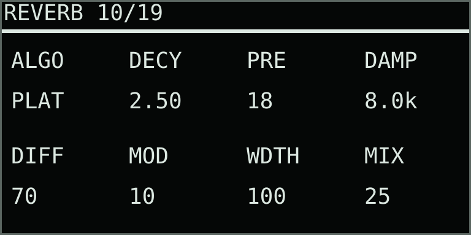
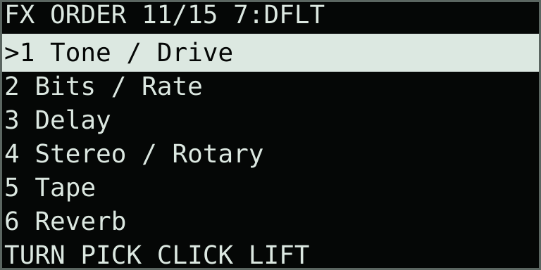
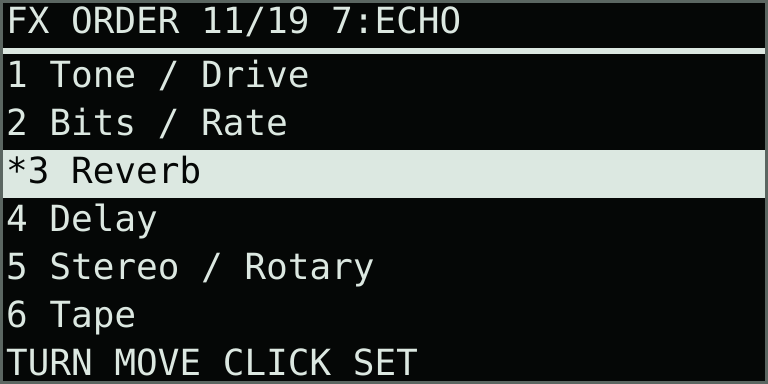

Post-engine sound
Effects
Every playback engine feeds one clip-local stereo chain: tone shaping, drive, bit and rate reduction, cross-feedback delay, stereo cross-pan, rotary speaker, then tape and reverb. FX Order lets you rearrange these six blocks. Reverb and FX Order follow the three existing effects pages for every engine.
The figures below use Lanes, where these are pages 7–11 of 15. Their order is the same for every engine, but the displayed numbers change because each engine has a different number of contextual pages before Mix / Rec.
Input Monitor stays dry, which prevents the effects from becoming a microphone monitoring loop. Browser Preview and Resample use the complete processed chain.
The final safety limiter smooths fast peaks from overlapping notes and live parameter changes with 1.5 ms of lookahead. Both channels share the same gain, preserving their stereo balance.
Split mode: two independent instruments share the pad grid, with two stereo lanes and four voices each. Use the same engine with different settings or choose different engines. Split setup, controls, mixing, and recording.
Split effects: Shift + Capture opens FX Sends. Knobs 1–4 send A/B to Delay and Reverb; knobs 5–6 set their shared return levels. Main click opens a menu for every effect page. Each part’s Color and Rotary are private inserts; Tape is shared. These return controls appear only on FX Sends in Split.
Effects — every parameter
Effects
| Knob | Display | Range | What it controls |
|---|---|---|---|
| 1 | TONE | −1.00–1.00 | Darkens toward −1 with a low-pass contour; brightens toward +1 by progressively removing low frequencies. Zero is bypass. |
| 2 | DRIV | 0.00–1.00 | Adds level-dependent soft saturation before reduction and delay. Its smoothed, continuous transfer does not generate isolated clicks, although added level and harmonics can make an existing edge more prominent. |
| 3 | BITS | 0.00–1.00 | Moves from transparent resolution toward coarse four-bit quantization. Quantizer edges are deliberately digital; use 0.00 when clean playback is required. |
| 4 | RATE | 1–16 | Holds each stereo sample for this many output frames. Values above 1 deliberately create stepped high-frequency edges; use 1 for full-rate clean playback. |
| 5 | DLY | 1–750 ms | Free-running delay time in milliseconds. Live and recorded changes use uninterrupted tap crossfades; a new value arriving mid-transition is queued rather than jumping the active read head. |
| 6 | FDBK | 0–90% | Amount returned to the delay. The feedback path is safely limited but high values can still build a dense tail. |
| 7 | WDTH | 0–100% | At 0%, each delay channel feeds itself. At 100%, left and right cross-feed for ping-pong motion. |
| 8 | MIX | 0–100% | Delay wet balance. Tone, Drive, Bits, and Rate remain audible at 0% because they precede the dry/wet delay stage. |
DRIV uses 4× oversampling to reduce harsh aliasing on bright material and high notes. At zero, the clean signal retains its full frequency response. The effects path retains a fixed additional delay of about 0.54 ms as Drive changes.
Continuous effect controls glide during live moves and recorded automation. Ordinary tone, drive, feedback, stereo, rotary, and tape changes use a short 5 ms response; wet/dry controls use a longer 12 ms fade because they blend signals with different phases. Delay-time changes use a 10 ms tap crossfade and complete it before moving toward the newest queued value. Changes to BITS and RATE also crossfade over 10 ms, keeping the deliberately stepped reduction sound without abruptly switching settings. Rapid edits finish their active fade before applying the newest value.
Stereo / Rotary
| Knob | Display | Range | What it controls |
|---|---|---|---|
| 1 | X-PN | −100–100 | Cross-pans the complete stereo image. NORM at −100 preserves left and right, MONO at 0 sends their averaged sum to both outputs, and SWAP at +100 exchanges left and right. Intermediate values progressively collapse or reopen the field. |
| 2 | RATE | 0.00–8.00 Hz | Sets the high-horn target speed; the low drum runs slightly slower. At 0.00, both rotors brake to a stop at their current angles rather than resetting their phase. |
| 3 | DPTH | 0–100% | Controls stereo level motion and Doppler pitch depth for the independently moving high horn and low drum. |
| 4 | SPRD | 0–100% | Controls only the width of the rotary wet signal. Zero folds the cabinet to mono while retaining its movement; 100% preserves the full modeled stereo field. |
| 5 | RAMP | 50 ms–8.00 s | Sets rotor acceleration and braking inertia. The high horn responds first and the heavier low drum follows more slowly. Encoder spacing is finer below 500 ms and progressively broader for long ramps. |
| 6 | BAL | DRUM–EVEN–HORN | Balances the low drum against the high horn. The end positions isolate one rotor; EVEN keeps both bands at equal nominal gain. |
| 7 | XOVR | 250–2000 Hz | Sets the crossover between the drum and horn. Lower values give more of the sound to the horn; higher values give more to the drum. Encoder steps are deliberately finer in the lower range. |
| 8 | MIX | 0–100% | Blends the rotary cabinet with the cross-panned signal. Zero bypasses the rotary stage; 100% is the rotating cabinet alone. Its lower-right position matches MIX on the main Effects page. |
The rotary stage splits the signal into a low drum and high horn, moves them at related but different rates, and combines stereo amplitude movement with short modulated delays. The high horn accelerates faster than the heavier drum. A reduced amount of the original side signal is retained so unusually wide or phase-opposed stereo material does not disappear. X-PAN is before Rotary, while SPRD acts on the rotary wet signal only, so MONO can deliberately give the speaker a centered source that the cabinet spreads into motion.
Tape
| Knob | Display | Range | What it controls |
|---|---|---|---|
| 1 | FMT | 2″, 1″, ½″, ¼″, ⅛″ | Selects a tape-width character. Wider settings retain more bandwidth and stereo separation with gentler saturation; narrower settings progressively soften the top end, narrow the image, increase the head contour, and compress peaks. Changes morph the modeled head geometry and condition over 20 ms instead of jumping the read position. The default is 2″. |
| 2 | REC | 0–100% | Sets the record-head level. Higher settings add level-dependent compression and restrained saturation before the tape condition is applied. |
| 3 | AGE | 0–100% | Moves from fresh tape toward worn media by reducing high-frequency bandwidth and stereo stability, softening transients, strengthening the head contour, and increasing compression. It does not automatically add loud hiss. |
| 4 | CRNK | 0–100% | Controls the frequency and depth of occasional soft tape-drag events. Each event briefly reduces bandwidth and level with a small, smoothly moving speed sag. It does not generate dust, scratches, clicks, pops, or phonograph-style surface noise. Zero is clean. |
| 5 | MECH | 0–100% | Combines coherent wow, flutter, and non-periodic transport drift. The macro primarily increases depth, while its composite motion avoids behaving like one synchronized LFO. Zero is stable. |
| 6 | INRT | OFF, 50 ms–4.0 s | Adds mechanical deceleration and acceleration to Loop Stack Hold. Higher settings take longer to stop and restart. At rest the tape wet path is silent; releasing Hold returns it with a rising varispeed gesture. OFF leaves Stack Hold unchanged. |
| 7 | HISS | OFF, −83–−54 dBFS | Sets a filtered stereo tape-noise floor in decibels. The bottom −84 dBFS detent is displayed as OFF and generates no noise. Hiss level remains independent of FMT and AGE; the default −72 dBFS setting is deliberately restrained. |
| 8 | MIX | 0–100% | Blends the complete tape path with the signal leaving Rotary. Its audio-tapered curve gives finer control over subtle low wet amounts; 0% is a clean bypass. |
FMT is a musical character macro rather than a calibration of one particular recorder. The first four choices correspond to familiar professional open-reel tape widths. The ⅛″ label is familiar cassette shorthand; compact cassette tape is actually 0.150″ (3.81 mm) wide. Tape speed, track layout, formulation, and machine alignment also affect real tape fidelity. FMT establishes a physical baseline, so AGE, CRNK, and MECH become somewhat more pronounced on narrower formats.
INRT affects only the Tape wet path. At MIX below 100%, the untreated portion continues while the modeled transport stops. This keeps Stack Hold useful as a subtle gesture at low tape mixes and allows a complete tape stop at 100%. The stop and return retain the duration in use when the gesture began. Changes to INRT during the gesture take effect after the transport returns to normal; turning it OFF initiates that smooth return.
Reverb

| Knob | Display | Range | What it controls |
|---|---|---|---|
| 1 | ALGO | Plate / Room | Algorithm. Plate is a dense Dattorro-style reverb; Room is a lighter four-line feedback-delay network for tighter spaces. |
| 2 | DECY | 0.20–20.0 s | Decay. Controls the nominal tail duration; damping and source material also affect the audible length. Encoder spacing is finer for short decays. |
| 3 | PRE | 0–200 ms | Predelay. Separates the onset of the reverberation from the dry sound. Changes use queued tap crossfades. |
| 4 | DAMP | 500 Hz–18 kHz | Damping. Darkens high frequencies inside the reverberation. The upper limit also follows the audio sample rate. |
| 5 | DIFF | 0–100% | Diffusion. Controls how strongly the input and tank allpass sections scatter the sound; low values reveal more discrete echoes. |
| 6 | MOD | 0–100% | Modulation. Adds gentle movement to internal delay reads. Room uses less movement than Plate. |
| 7 | WDTH | 0–100% | Stereo width. Zero centres the wet signal; 100% retains its full stereo field. Dry stereo remains intact. |
| 8 | MIX | 0–100% | Wet/dry balance. Zero is a transparent, sleeping reverb stage. Raising it starts a fresh tail; lowering it smoothly fades the tail out. |
Only the selected algorithm runs. Algorithm changes fade the wet path to dry over 20 ms, start the new network, and fade it back in over 20 ms. The previous algorithm's tail fades away. Plate preserves side excitation from phase-opposed stereo sources. Both algorithms use the original audio sample rate. A 20 Hz filter on the wet input prevents DC offsets building up in long tails; the dry signal retains its bass response.
FX Order


| Control | Display | Action | What it controls |
|---|---|---|---|
| Main encoder turn | Highlighted row | Select / move | Highlight an effect. After lifting it, move the effect up or down; intervening effects shift around it. |
| Main encoder click | * on lifted row | Lift / drop | Lift the selected effect. Click again to drop it and apply the complete order. On this page the main click edits routing; the Record button remains available for performance recording. |
| Back | ORDER CANCELLED | Cancel | Cancel the current move or pending preset and restore the active order. With no pending edit, Back returns to the waveform. |
| Knob 7 | 7:DFLT / ECHO / CRSH / CUST | Starting preset | Stage a complete starting order, then click the main encoder to apply. DFLT places Reverb last; ECHO places it before Delay; CRSH starts with Reverb, followed by Bits/Rate and Tone/Drive. CUST identifies a manually arranged order. |
Tone / Drive keeps Tone before Drive. Bits / Rate keeps the two reduction controls together. Stereo / Rotary keeps Cross-pan before Rotary. Each block appears once, giving 720 possible orders. Parameter pages keep their usual positions as the audio order changes.
Moving a block or staging a preset does not change the sound until the main click confirms it. Applying uses a 20 ms fade down, switches at silence, then fades up over 20 ms. A short level dip is normal. Delay, rotary, tape and reverb histories remain in memory; their subsequent sound follows the new routing. The compressor and safety limiter always follow the customizable chain, and Input Monitor remains dry.
Reverb settings and the applied order belong to the selected performance clip and return next session. During Replace or Overdub, reverb edits and dropped order changes are recorded. The whole order is one stepped event, so playback cannot pass through partial routes. Changing clips, leaving the page, or closing parameters cancels an unfinished move.
Good starting points
Core effects starting points
| Starting point | TONE | DRIV | BITS | RATE | DLY | FDBK | WDTH | MIX |
|---|---|---|---|---|---|---|---|---|
| Warm stack | −0.20 | 0.18 | 0.00 | 1 | 250 ms | 20% | 40% | 0% |
| Dry digital edge | 0.08 | 0.12 | 0.35 | 4 | 90 ms | 12% | 0% | 8% |
| Wide repeat | −0.10 | 0.08 | 0.00 | 1 | 375 ms | 55% | 100% | 30% |
| Unstable trail | 0.15 | 0.22 | 0.18 | 2 | 143 ms | 72% | 100% | 42% |
Stereo / rotary starting points
| Starting point | X-PN | RATE | DPTH | MIX | RAMP | BAL | XOVR | SPRD |
|---|---|---|---|---|---|---|---|---|
| Original field | NORM | 0.80 Hz | 70% | 0% | 350 ms | EVEN | 800 Hz | 100% |
| Centered source | MONO | 0.80 Hz | 70% | 0% | 350 ms | EVEN | 800 Hz | 100% |
| Slow cabinet | NORM | 0.80 Hz | 65% | 35% | 900 ms | DRUM 15% | 700 Hz | 85% |
| Fast cabinet | NORM | 6.20 Hz | 85% | 55% | 250 ms | HORN 20% | 950 Hz | 100% |
| Stopped cabinet | MONO | 0.00 Hz | 75% | 55% | 2.00 s | EVEN | 800 Hz | 100% |
| Narrow reversed field | SWAP | 2.40 Hz | 75% | 45% | 500 ms | EVEN | 800 Hz | 35% |
Tape starting points
| Starting point | FMT | REC | AGE | CRNK | MECH | INRT | HISS | MIX |
|---|---|---|---|---|---|---|---|---|
| Mastering reel | 2″ | 10% | 8% | 0% | 5% | OFF | −72 dBFS | 28% |
| Warm quarter-inch | ¼″ | 24% | 24% | 4% | 9% | OFF | −70 dBFS | 42% |
| Stable cassette | ⅛″ | 18% | 18% | 3% | 8% | OFF | −68 dBFS | 50% |
| Worn transport | ⅛″ | 30% | 68% | 55% | 48% | 1.2 s | −64 dBFS | 68% |
| Full tape stop | ¼″ | 18% | 25% | 8% | 18% | 1.2 s | −72 dBFS | 100% |
Resampling: Resample records the processed instrument output, including this chain. Input recording captures the selected Move input instead. Browser Preview also passes through the effects, while Monitor remains dry.
Performance-loop motion
Every control on all effects pages can be recorded in a performance loop. Begin Replace or Overdub recording, then turn an encoder. Continuous values interpolate between recorded points; stepped choices change at their recorded thresholds while their audio paths retain the appropriate safety transition. Undo Take removes the newest layer of effect motion together with the other notes and gestures in that take.